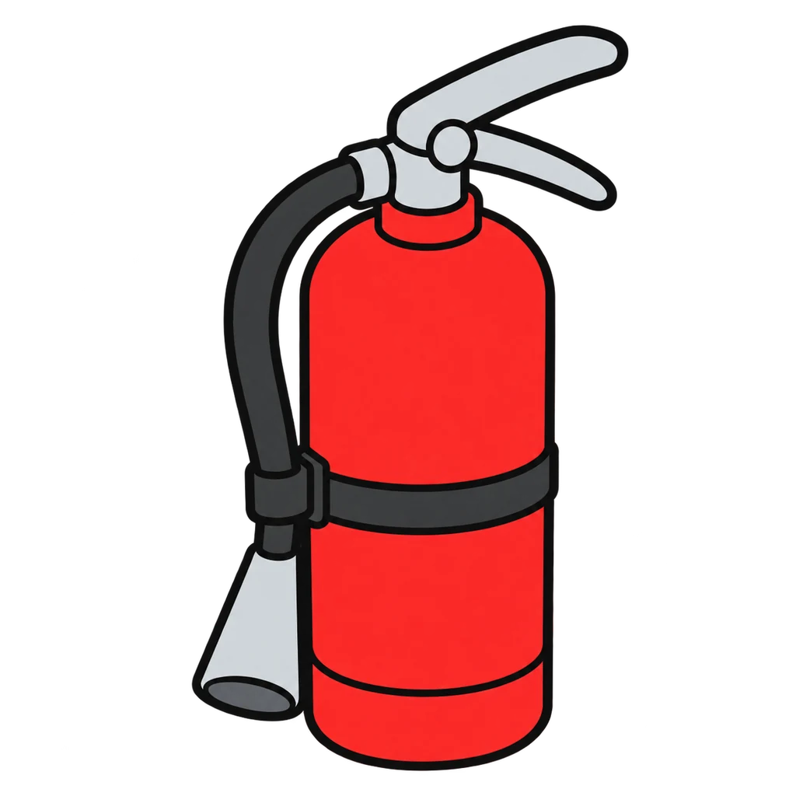
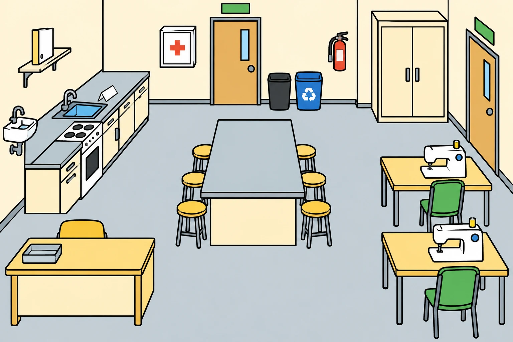

Reviews Lesson 0.2. Reviews Lesson 0.2, the room tour and the precise-words slide. Round 1 is the ten tour stops: the rule appears and the student taps the stop in the room picture, which is a generic FACS room, not your room; the map on Handout 00.02 is still the one students label. Round 2 sorts sixteen words from the precise-words slide into position, size, count, and shape. Use it during the do now of Lesson 0.5 for the needs more students who labeled fewer than six stops, and again the week before Lesson 1.4, the Kitchen Safety Exam, which assesses the zones and the reset cue. Hazard Hunt covers hazards; this game covers where things are and the rule at each, so the two do not overlap.

Room Tour
A picture of the FACS room with ten tour stops. A rule appears, and you tap the stop it belongs to. Then a precise word appears, and you tap its family: position, size, count, or shape.
How to play
- "[word]" is a [family] word. Position: top, bottom, left, right, middle, corner, above, under, next to, inside, outside. Size: big, small, tall, short, as big as, half the size of. Count: one, two, three. Shape: circle, square, triangle, rectangle, oval, line, curve.

Done
The ones to study:
Worth knowing by heart:
- The ten stops on the room map and the one rule at each (Handout 00.02, Part A).
- The reset cue in three words: lights, countdown, hands empty.
- The precise-words slide: position, size, count, shape.